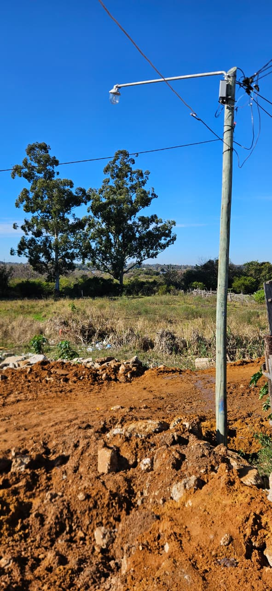
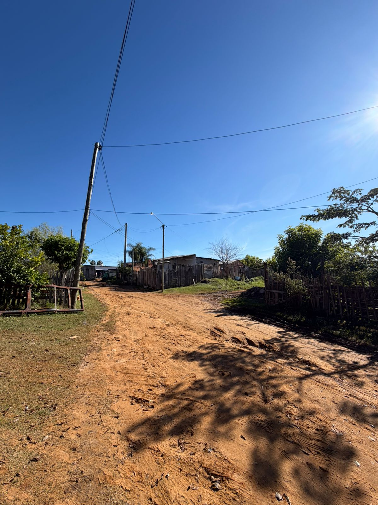
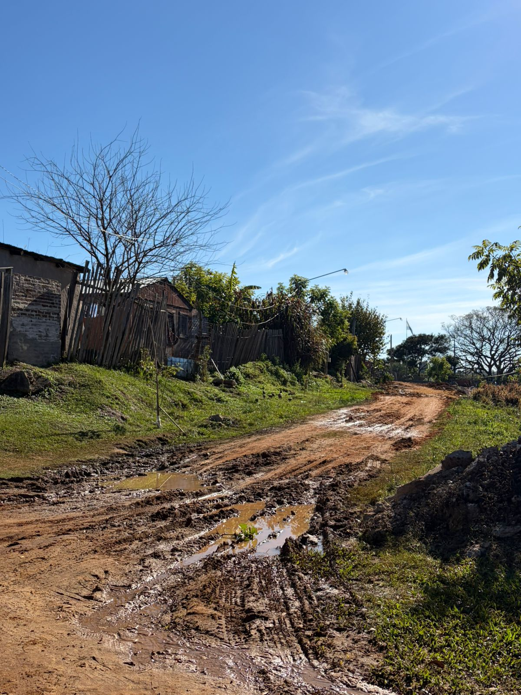
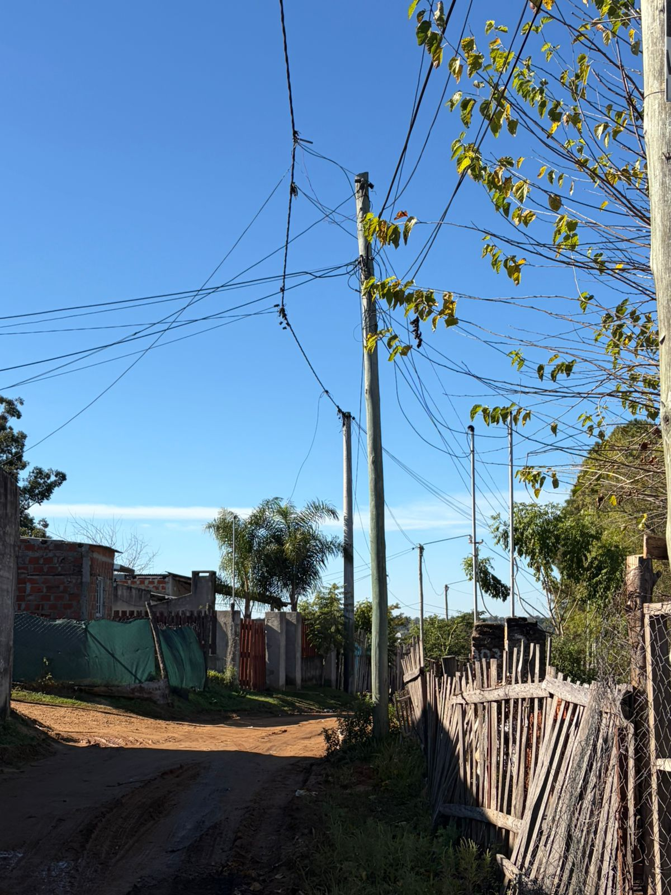
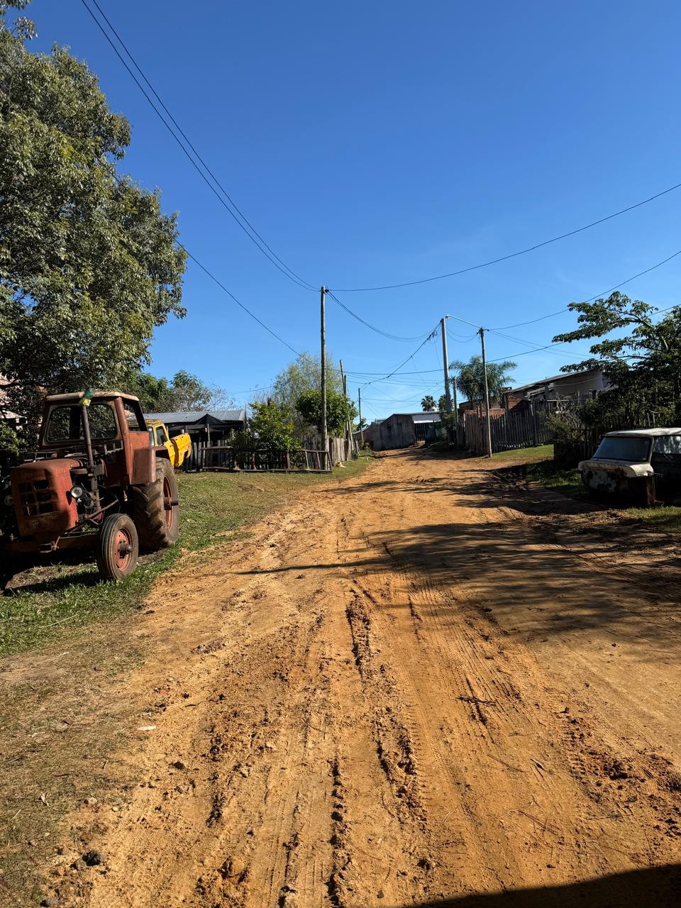
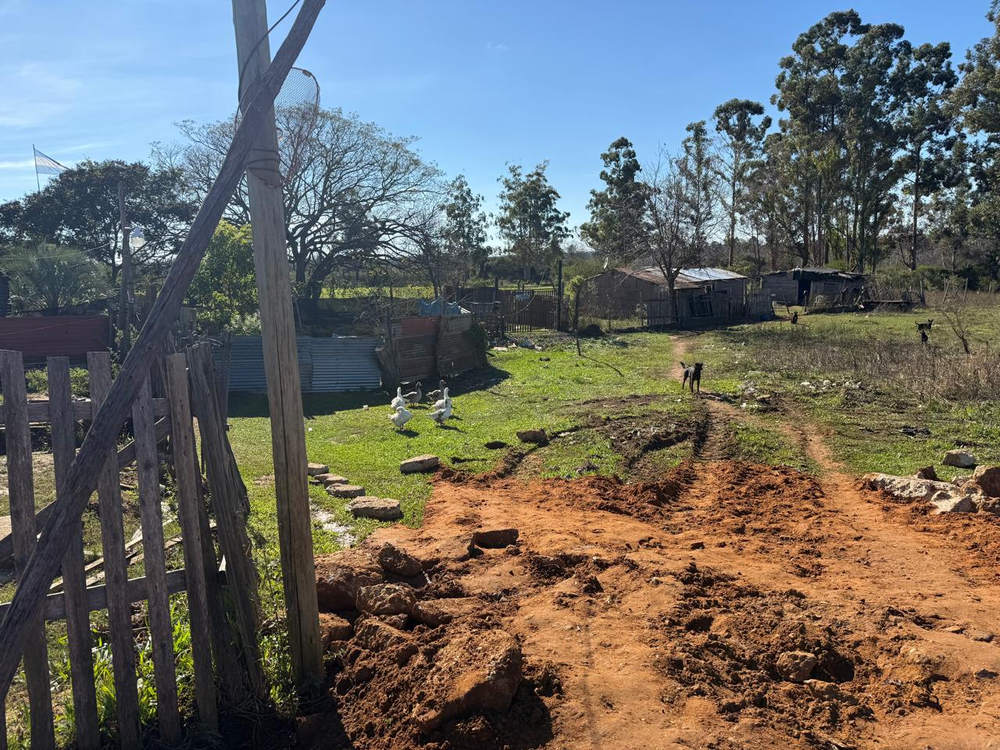

Introducción
El asentamiento La Bianca se ubica en la zona noreste de la ciudad, a aproximadamente cinco cuadras del río Uruguay y cercano a la playa Los Tomates, que algunos vecinos utilizan para la pesca como medio de vida. El sector relevado corresponde al perímetro delimitado por la calle San Juan al oeste, Antártida Argentina al norte, Chubut al sur, y terreno baldío al este. Residen en él aproximadamente 60 familias.
El asentamiento se relaciona con el Barrio La Bianca y está construido sobre terrenos que originalmente estaban destinados a las piletas de decantación de efluentes del complejo habitacional barrio 708 viviendas, inaugurado en 1980. Con el tiempo, al quedar el barrio conectado al sistema de cloacas, esos terrenos del IAPV quedaron sin destino aparente y fueron ocupándose progresivamente, primero con comercios y luego con viviendas que se extendieron hacia el río Uruguay.
Se distinguen dos sectores con marcadas diferencias: las viviendas más cercanas a la calle San Juan son en su mayoría de material, con techos de chapa de zinc, revocadas y con mejoras; mientras que las del límite este son de madera, precarias, con techos de chapa asfáltica y sin mejoras. En la actualidad, la mayoría de los habitantes tiene regularizada con el municipio la tenencia de su terreno.
Servicios públicos y comunicación
| Servicio | Estado | Detalle |
|---|---|---|
| Cloacas | No disponible | Sin red cloacal; los vecinos utilizan pozo ciego o pozo negro |
| Agua corriente | Por mangueras | Todas las viviendas acceden mediante mangueras tendidas por las calles hasta cada hogar |
| Alumbrado público | Parcial | Presente pero de baja intensidad; de noche el sector queda bastante oscuro |
| Calles | Sin pavimentar | De tierra; en el límite este en muy mal estado e intransitables para vehículos comunes |
| Transporte público | Disponible | Líneas de colectivo 7 y 9 |
| Recolección residuos | Deficiente | Contenedores en San Juan y Antártida Argentina; algunos vecinos queman o entierran la basura |
| Telefonía celular | Disponible | Uso generalizado de teléfonos móviles |
| Internet | Parcial | Megacable; Internet Cooperativa por enlace inalámbrico (no fibra óptica) |
Servicio Eléctrico
Las líneas eléctricas que recorren las calles Chubut y Antártida Argentina se realizaron a partir de la solicitud de las familias residentes. En un principio Electrotecnia del municipio no lo permitía por tratarse de terrenos provinciales, pero tras las gestiones correspondientes se ejecutaron los tendidos: primero por calle Chubut y años más tarde por Antártida Argentina, según la instalación de nuevos vecinos.
Informe técnico (Tco. Lampazzi): La cuadrícula inspeccionada presenta, hasta el momento, las mejores condiciones generales en relación con el uso y estado de las instalaciones eléctricas. Si bien se detectaron algunas conexiones irregulares, una parte significativa de las familias cuenta con pilares normalizados y medidores correctamente instalados, lo que evidencia un mayor nivel de regularización respecto de otros sectores relevados.
Gran parte de la infraestructura existente (postes y tendidos) se encuentra en buenas condiciones. Resultaría conveniente aprovechar las obras ya ejecutadas para realizar mantenimiento preventivo, particularmente elevando algunos tramos del cableado en sectores donde circulan vehículos de gran porte (camiones recolectores y proveedores), reduciendo el riesgo de enganches accidentales. Los vecinos con conexiones regularizadas manifestaron conformidad con la calidad del servicio y los niveles de tensión, y los tendidos se encuentran libres de interferencias por árboles o ramas.
Establecimientos educativos y de salud
Salud: En cercanías del asentamiento se encuentra el Centro de Salud "La Bianca", que brinda cobertura de especialidades básicas (clínica médica, pediatría, ginecología, obstetricia) y cuenta con ambulancia permanente para urgencias. Para tratamientos e internaciones, los vecinos recurren al Hospital Masvernat.
Educación secundaria: Escuela N°2 "José Gervasio Artigas".
Educación primaria: Escuela N°69 "Malvinas Argentinas", además de un jardín de infantes en la zona.
Información de las familias
En el sector se observan huertas y hornos de ladrillos que utilizan los vecinos como medio de vida, además de la pesca en la cercana playa Los Tomates. El barrio cuenta con comisaría 6ta y registro civil próximos, clubes como el Social y Deportivo "La Bianca", plazas y plazoletas de uso recreativo, y cajero automático en el Barrio La Bianca lindero, lo que facilita los trámites y el abastecimiento de los vecinos.
Composición familiar: Promedio de 4,2 personas por hogar.
Edad promedio: 27,4 años, una población relativamente joven.
Ingresos: Promedio declarado de $446.000, un valor bajo. El número está influido por grupos familiares entrevistados con ingresos estables (empleados municipales y docentes) que no quisieron detallar el monto, y por pescadores que tampoco informaron un promedio.
Material de construcción: Aproximadamente el 73% de las viviendas relevadas son de material noble y el resto de madera, concentrándose las construcciones precarias hacia el límite este.
Hacinamiento: Se declara un número de entre 2 y 3 ambientes por vivienda (incluyendo cocina o comedor), lo que frente al promedio de personas por hogar evidencia presencia de indicadores de promiscuidad y hacinamiento.
Energía para cocción: Utilizan gas envasado y en algunos casos cocinan a leña; varios vecinos expresan que se les complica la compra de la garrafa por su costo.
Conclusión
El asentamiento La Bianca presenta el mayor nivel de regularización eléctrica entre los sectores relevados, con una proporción significativa de pilares normalizados, medidores correctamente instalados e infraestructura en buenas condiciones. La mayoría de los habitantes tiene además regularizada la tenencia de su terreno. No obstante, persisten déficits estructurales: ausencia de red cloacal, acceso al agua únicamente mediante mangueras, calles de tierra intransitables hacia el límite este e indicadores de hacinamiento. Para la Cooperativa Eléctrica, la intervención prioritaria es de mantenimiento preventivo sobre la red existente —especialmente la elevación de tramos de cableado en zonas de circulación de vehículos de gran porte— a fin de evitar daños mayores y costos superiores a los de una intervención planificada.
Registro fotográfico — La Bianca





